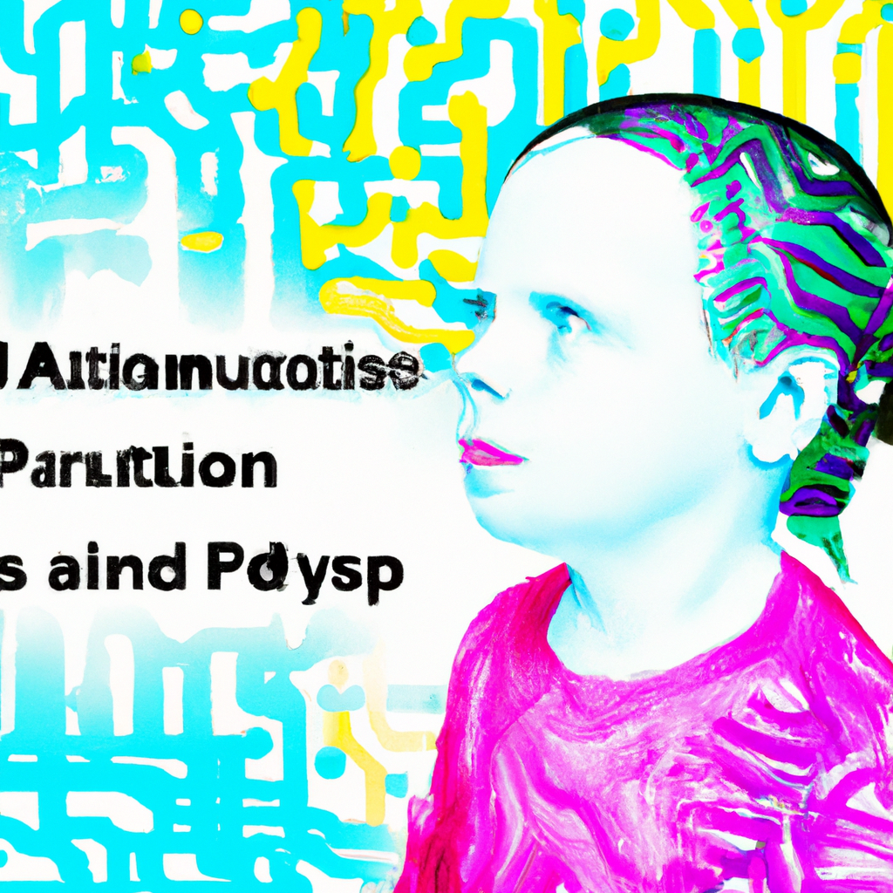

The future of Python and AI and Autistic people
As technology continues to evolve, so too does the use of machine learning in various contexts. One of these contexts is the use of Python and AI to help autistic children with their learning. Machine learning is the process of using algorithms to process data and to build models that can be used to make predictions or decisions. This can be very beneficial to autistic children as it can help them learn new skills and improve their quality of life.
The advantages of using machine learning in the context of autism are many. Machine learning can help identify patterns in the behavior of autistic children, which can be used to help them better understand their environment and their behavior. In addition, machine learning can be used to help autistic children become more independent, as it can help them become more adept at completing tasks that are difficult for them to accomplish on their own.
However, there are some potential drawbacks to using machine learning and AI in the context of autism as well. One of the main concerns is that machine learning can be used to manipulate autistic children for the benefit of others. For example, if a machine learning algorithm is used to identify patterns in the behavior of an autistic person, this data can be used to make decisions about them without their consent. This could lead to a situation where an autistic person is being manipulated without their knowledge or consent.
Another concern is the potential for machine learning algorithms to become biased and to make incorrect decisions. As machine learning algorithms become more complex, they can become more susceptible to bias, which can lead to incorrect decisions being made. This could be extremely damaging to an autistic person if they were to be judged incorrectly.
Despite these concerns, there are still a number of advantages to using machine learning and AI in the context of autism. For example, machine learning can help autistic children learn new skills, which could help them become more independent and successful. Machine learning can also help autistic children become more aware of their environment and their behavior, which could help them better interact with their peers.
In conclusion, machine learning and AI can be used to help autistic children learn new skills and improve their quality of life. However, there are potential drawbacks to using machine learning and AI in the context of autism that should be considered. With this in mind, it is important to use machine learning and AI responsibly and to ensure that the data collected is used responsibly. By doing so, we can ensure that machine learning and AI are used for the benefit of autistic children and not to manipulate them for the benefit of others.